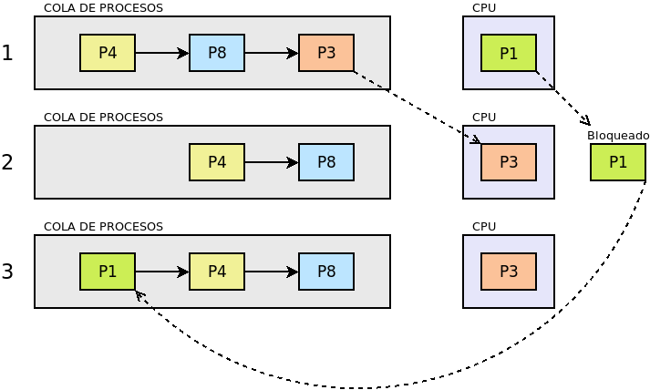
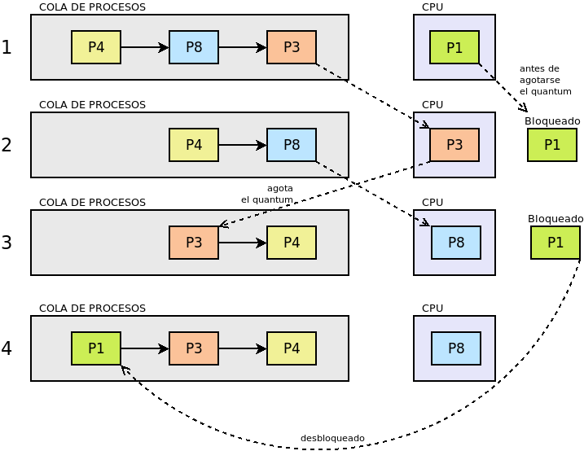

2.2.1. Gestión de procesos¶
Ya se ha definido un proceso como un programa en ejecución para lo cual se carga de la memoria de almacenamiento a la memoria principal. Entiéndase que un programa, en principio, no es más que un conjunto de instrucciones almacenadas en uno o varios ficheros. Es cuando se solicita su ejecución, cuando se crea un proceso y se cargan las instrucciones en memoria para su ejecución. El proceso, pues, está ligado a la ejecución de un programa y no, simplemente, al programa. De hecho, un programa puede ejecutarse varias veces distintas, bien simultáneamente o bien sucesivamente. Por ejemplo, podemos usar la orden cp para copiar un fichero a otra ubicación y, posteriormente, volver a utilizarla para copiar un fichero distinto en una ubicación distinta. Incluso, antes de acabe la primera copia, podemos iniciar la segunda. Sea como esa, aunque en ambos casos se usa el mismo programa (cp), nos hallamos ante dos procesos distintos.
Lo habitual es que corran varios procesos simultáneamente que, además, requieren acceso a distintos recursos, por lo que el sistema operativo tiene que encargarse de determinar qué proceso se ejecuta en un momento determinado y evitar problemas en el acceso a los recursos, nos hallamos ante dos procesos distintos. Todo ello se conoce como gestión de procesos e incluye:
Crear y destruir procesos.
Decidir cuál proceso y durante cuánto tiempo se ejecuta (tiempo compartido), lo cual implica suspender y reanudar procesos temporalmente.
Sincronizar y comunicar procesos entre sí.
Para identificar y controlar cada proceso, el sistema operativo asocia a cada uno de ellos una estructura de datos conocida como bloque de control del proceso (abreviado PCB), que más adelante analizaremos.
2.2.1.1. Hilos¶
También conocidos como hebras o directamente con el término inglés threads. Los procesos pueden descomponerse, a su vez, en hilos que son secuencias de instrucciones del proceso que, aunque comparten memoria y recursos, pueden ejecutarse de manera simultánea a otra secuencia de instrucciones del mismo proceso. Esto posibilita, cuando la máquina dispone de varios procesadores, que el proceso pueda repartir los hilos entre varios procesadores y, en consecuencia, el proceso se ejecute más rápido y aumente el rendimiento.
2.2.1.2. Tipos¶
Podemos clasificar los procesos según varios criterios distintos:
Número de hilos
Atendiendo al número de hilos en que se descompone el proceso:
- Monohilo
El proceso está compuesto por un único hilo.
- Multihilo
El proceso está compuesto por dos o más hilos.
Responsable de su ejecución
En este caso se atiende a quién es el decide ejecutar el proceso.
- Proceso del sistema
Es aquel proceso ejecutado por el propio sistema operativo, bien al arrancar bien en cualquier otro momento. En los sistemas monolíticos se ejecutan en modo kernel, aunque pueden ejecutarse en modo usuario en caso de los sistemas con microkernel o los sistemas híbridos.
- Proceso de usuario
Son procesos ejecutados por un usuario, aunque éste no tiene por qué coincidir con un usuario físico. Por ejemplo, la ejecución de un servidor web es un proceso de usuario que, por lo general, se configura para ejecutarse automáticamente al arrancar el sistema. Se ejecutan en modo usuario.
Interacción con el usuario
El tercer criterio tiene que ver con el modo en que interactúa el usuario con el proceso.
- Interactivo
También llamado proceso en primer plano es aquel con el que interactúan directamente los usuarios. Un navegador o un procesador de textos se ejecutan en primer plano.
- En segundo plano
Son procesos con los que el usuario no tiene interacción directa. Por lo general, son procesos que en continua ejecución brindan servicios, aunque excepcionalmente, un usuario puede enviar un proceso a ejecutarse en segundo plano. Cuando brindan servicios se denominan servicio. En los sistemas UNIX es frecuente referirse a los servicios como demonio.
2.2.1.3. Caracterización¶
Un proceso siempre está caracterizado por un PCB que contiene la identificación y las propiedades del proceso en cada momento. Esta estructura de datos se crea al iniciarse el proceso y se destruye al finalizar. Contiene información muy variada entre la que destaca:
El IDentificador.
El estado.
La prioridad.
Direcciones de memoria asignadas.
Recursos asignados.
Propietario.
etc.
2.2.1.3.1. Identificador¶
Es un número único que identifica inequívocamente al proceso. Una vez que el identificador ha sido usado, no puede volver a usarse para identificar otro proceso, a menos, que se reinicie el sistema. Suele denominarse PID.
2.2.1.3.2. Estado¶
EL PCB debe también almacenar cuál es el estado del proceso en todo momento, que puede ser:
- Listo (o en espera o preparado)
Es el proceso del que no se están ejecutando órdenes, pero que está en disposición para que el sistema le asigne un procesador y pase a ser ejecutado.
- En ejecución
Es el proceso que tiene asignado procesador y del que están ejecutándose instrucciones. El proceso puede cambiar este estado, porque:
el algoritmo de ejecución decida expulsarlo del procesador para concedérselo a otro que estuviera en espera. En ese caso, pasará a Listo.
requiera un recurso no disponible u ocupado por otro proceso, en cuyo caso pasará al estado de Bloqueado.
acabe el proceso.
- Bloqueado
El proceso está a la espera de un recurso ocupado y no disponible, y no podrá abandonar este estado hasta que tal recurso no quede libre, en cuyo caso pasará al estado de Listo.
- Creado
Es el estado en que se ha ordenado la ejecución del proceso y se están creando la estructura de datos necesaria y asignándosele memoria. Al llevarse cabo todos estos preliminares pasa al estado de Listo.
- Zombie
En UNIX, es un proceso finalizado del que por algún motivo no se ha podido eliminar su PCB y sigue figurando en la cola de procesos.
- Suspendido
Es un proceso detenido a petición del usuario que durante el tiempo en que permanece en este estado, no es seleccionado por el algoritmo de planificación para pasar a ejecución. Al reactivarse pasa a Listo, aunque el usuario tiene potestad también para cancelarlo.
A los cambios entre dos estados se les denomina transición.
2.2.1.3.3. Prioridad¶
La prioridad define la importancia que el planificador de procesos debe concederle a tal proceso. Cuanto más prioritario sea, más tiempo de procesador debería concederle el sistema operativo.
2.2.1.3.4. Propietario¶
El propietario del proceso suele coincidir con aquel que ha requerido la ejecución del programa y determina cuál es el nivel de permisos del que gozará el proceso.
2.2.1.4. Vida¶
2.2.1.4.1. Creación¶
Un proceso se crea al invocarse un programa. Esta invocación puede deberse a varia causas:
Durante el arranque del sistema operativo, porque así lo requiera el sistema operativo o porque se haya definido de este modo por el administrador del sistema. Por ejemplo, un servicio de compartición de ficheros.
Porque un usuario. explícitamente, pida la ejecución del programa a través de la interfaz que el sistema operativo proporciona ya sea CLI o GUI.
Porque un proceso, durante la ejecución de su código, provoque la creación de otro proceso del mismo o distinto programa.
La creación del proceso implica que se le asigne un PID y se cree un PCB con sus datos. Hecho esto, se añade el proceso a la Tabla de procesos (PT), que no es más que una tabla en la que cada entrada (fila) representa un proceso y contiene su identificador y un puntero a su PCB. Con ello, ya se puede reservar la memoria necesaria para la ejecución del proceso (instrucciones y datos iniciales), se marca como listo y pasa a estar disponible para el algoritmo de planificación le ceda el uso del procesador.
2.2.1.4.2. Desarrollo¶
El proceso proseguirá su ejecución según la determine el algoritmo de planificación (véase el epígrafe dedicado a explicar los distintos estados del procesos). Sólo en los momentos en los que obtiene tiempo de procesador, avanzará en su ejecución. A este respecto:
Si se encuentra en ejecución, podrá perder este estado, bien porque así lo determine el planificador (transición a Listo), bien porque requiera el uso de un recurso para el que debe esperar (Bloqueado). Cuando ocurre esto último, se origina lo que se llama un dfn:cambio de contexto, que es producto de una interrupción generada por el hardware para avisar al procesador de que debe expulsar al proceso en ejecución. El cambio de contexto supone:
Salvar el estado del proceso (denominado contexto).
Seleccionar otro proceso a ejecutar según determine el algoritmo de planificación.
Restaurar el estado del proceso seleccionado para su ejecución.
Ejecutar el proceso seleccionado.
Si se encuentra listo en la PT, en el momento en que un procesador quede libre, el planificador, según el criterio de su algoritmo, podrá seleccionarlo para que ocupe el procesador y pase a ejecutarse.
2.2.1.4.3. Finalización¶
El proceso finalizará cuando ocurra una de estas causas:
Ha completado la ejecución de todas sus instrucciones.
El proceso se cancela por un error durante su ejecución.
Un usuario con los suficientes permisos, por lo general el propietario o el administrador, ordena su finalización.
Otro proceso ordena su eliminación.
Al acabar el proceso, y antes de eliminar el PCB y la entrada en el PT, el proceso puede quedar en un estado temporal de Finalizado para que el usuario o el proceso padre puedan advertir que han acabado.
2.2.1.5. Algoritmos de planificación¶
Los planificadores de procesos deben hacer uso de algún algoritmo de planificación para decidir en cada momento qué proceso debe ocupar el procesador. Hay distintos tipos:
Planificación de plazo fijo
En esta planificación se establece el plazo en que debe terminarse una tarea, de manera que la tarea deja de tener valor si se culmina fuera de plazo. Esta planificación es compleja ya que:
El usuario debe informar con antelación de los recursos que precisa.
Debe completarse el proceso en el plazo fijo marcado sin degradar demasiado el rendimiento del resto de procesos.
El sistema debe ser capaz de planificar las necesidades de recursos en el plazo, lo cual es muy complicado si aparecen nuevos procesos que demanden también parte de esos recurso.
Si hay muchas tareas a plazo fijo activas, la planificación se volverá extremadamente compleja que obliguen al uso de algoritmos muy avanzados de optimización.
La administración intensiva por esta planificación puede suponer un gasto extra nada desdeñable.
Planificación FIFO
Estos algoritmos asignan el procesador al algoritmo que más tiempo lleva en el estado de Listo. Su nombre son las iniciales en inglés de «el primero en entrar es el primero en salir» y obedece a que el primero que entra en la cola de procesos listos es el primero que sale de ella al pasar al estado de Ejecución. La ventaja del algoritmo es muy sencillo ya que necesita únicamente mantener una cola de procesos ordenada según el tiempo de llegada al estado Listo. En cambio, es poco apropiado para entornos interactivos, ya que procesos que hacen uso intensivo de la CPU, lastran la ejecución del resto de los procesos; sin tener en cuenta la importancia que tenga el proceso o si es corto o largo. En consecuencia, no asegura unos tiempos de respuesta apropiados.
Si asignamos tiempos a los procesos del esquema anterior para poder hacer un análisis más pormenorizado:
Procesos |
Duración |
Observaciones |
|---|---|---|
P1 |
5ms |
Bloqueado a los 3 ms. Listo 4ms después |
P3 |
3ms |
|
P8 |
4ms |
|
P4 |
10ms |
suponiendo que estos procesos se creen prácticamente simultáneamente en el orden expresado en la tabla, la evolución en el tiempo sería la siguiente:
Estado |
Instante |
||||||
|---|---|---|---|---|---|---|---|
0ms |
3ms |
6ms |
7ms |
10ms |
20ms |
22ms |
|
En ejecución |
P1 |
P3 |
P8 |
P8 |
P4 |
P1 |
|
Listo (cola en orden) |
P3 |
P8 |
P4 |
P4 |
P1 |
||
P8 |
P4 |
P1 |
|||||
P4 |
|||||||
Bloqueado |
P1 |
P1 |
|||||
Finalizado |
P3 |
P8 |
P4 |
P1 |
|||
Planificación de turno rotatorio (round robin)
La planificación round robin es muy adecuada para sistemas de tiempo compartido, ya que se le asigna a cada proceso un intervalo de tiempo determinado de ejecución, denominado quantum. El proceso se expulsa del procesador cuando agota su quantum o, antes de agotarlo, cuando acaba o se bloquea por requerir un recurso ocupado.
Para que se pueda implementar esta planificación se requiere la existencia de un reloj, ya que el quantum equivaldrá a un número de ciclos del reloj, y al expirar se generará una interrupción que informe de ello.
Es de vital importancia en esta planificación establecer cuál es la duración del quantum que podrá ser más largo o más breve, fijo o variable, igual o distinto para cada usuario, etc. Si el quantum es excesivamente grande, le dará tiempo a los procesos a acabar antes de que se agote, por lo que la planificación degenerará en una planificación FIFO. En cambio, si el quantum es muy pequeño, entonces aumentará notablemente el gasto extra por los continuos cambios de proceso; y el rendimiento se degradará. En consecuencia:
El rendimiento empeora a menor duración del quantum.
Los tiempos de respuesta empeoran a mayor duración del quantum.
En principio, la duración del quantum debe ser mayor que la mayoría de peticiones interactivas.
Nota
Podría probar a construir una tabla que describa la evolución en el estado de los procesos como la que se incluyó en la planificación FIFO.
Planificación por prioridad al más corto (SFJ)
Esta planificación como la FIFO ejecuta sin interrupciones el proceso (a menos que quede bloqueado, claro), pero en vez de elegir el primero que estuviera Listo, elige el que estima que tardará menos tiempo en finalizar. La ventaja sobre FIFO es que minimiza el tiempo medio de finalización. Para verlo supongamos que se deben llevar a cabo tres procesos cuyo tiempos de finalización son, respectivamente, 9 segundos, 18 segundos y 3 segundos:
FIFO:
\[\dfrac{9 + 27 + 30}{3} = 22 \quad \text{segundos}\]SFJ:
\[\dfrac{3 + 12 + 30}{3} = 15 \quad \text{segundos}\]
Planificación por prioridad al tiempo restante más corto (SRTF)
Es un variante de la planificación anterior en la que si aparece un nuevo proceso cuyo tiempo de ejecución es menor de lo que aún resta por ejecutar del proceso en ejecución, se expulsa éste, ordenándosele en la cola según el tiempo que aún le resta, y se pasa a ejecutar el nuevo.
Planificación a la tasa de respuesta más alta
Esta planificación es una estrategia que pretende corregir el exceso retraso que en SFJ presentan las tareas largas. En ella, la prioridad del proceso (su lugar en la cola) se calcula en función tanto de su tiempo de finalización (TF) como del tiempo que ha esperado para ser atendido (TE) y tiene la expresión:
Planificación por el comportamiento
Es una planificación que persigue garantizar al usuario una prestación mínima del sistema. Por ejemplo, en un sistema en el que concurran «n» usuarios, en principio, debería garantizársele a cada uno \(\dfrac{1}{n}\) de la potencia del procesador, o dicho de otra, forma; del tiempo consumido por el procesador, el usuario debería haber consumido la enésima parte. Pasado un tiempo, el usuario podrá haber consumido menos o más de esta cuota; y, en función de ello, se recalculará la prioridad del proceso del usuario para que se ajuste a su cuota.
En sistemas en tiempo real, se puede adoptar una variante de esta planificación en la que la prioridad viene determinada por el riesgo de que el proceso no cumpla con el plazo exigido.
Ver también
Como explicación complementaria a esta sobre algoritmos de planificación puede verse este vídeo de Juan V. Carrillo.